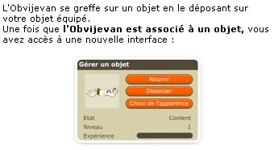
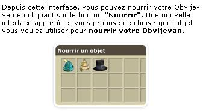
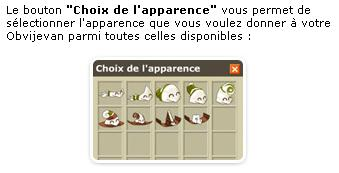

Les Obvijevans
Dis Immo, c'est quoi un Obvijevans ?
C'est un objet qui vient se rajouter sur votre équipement, pour changer son apparence. Ils n'apportent aucun bonus, ils permettent juste de changer l'aspect de votre equipement.
Il offre de ce fait un avantage stratégique (enfin pour la cape et la coiffe) puisque l'ennemi ne sait alors plus l'equipement que vous avez. L'adversaire ne sait pas à l'avance si vous jouez terre, air, feu ou air par exemple puisque votre equipement à l'apparence de votre obvijevan.
Enfin, il flood pas mal, et disent pas mal de conneries, ce qui en fait un compagnon de jeu.
Dis immo, comment je l'obtiens ?
Il s'agit de cadeau d'abonnement :
- Anneau : 1 mois d'abonnement (soit 5 euros)
- Amulettes : 3 mois d'abonnement (soit 14,50 euros)
- Capes : 6 mois d'abonnement (soit 27,5 euros)
- Coiffe : 1 an d'abonnement (soit 48 euros)
Aprés 2 mois les propriétaires peuvent aussi les vendres, vous pourrez donc en trouvez à acheter
Dis immo, comment on le fait évoluer ?
Les objets vivants peuvent être nourris toutes les douze heures au minimum. Contrairement aux familiers, il n'est pas nécessaire de les
nourrir régulièrement, si un Obvijevan n'est pas nourri pendant longtemps, il se contentera de vous réclamer à manger !
Chaque type d'objet vivant dispose de son propre régime alimentaire. Les capes Obvijevans mangent des capes, les chapeaux Obvijevans mangent
des chapeaux, les amulettes Obviejvans mangent des amulettes et les anneaux Obvijevans mangent des anneaux. Plus l'objet que vous leur donnerez est puissant (plus son niveau est important), plus l'Obvijevan évoluera rapidement. Attention l'objet que vous lui donner à manger est perdu !
Lorsqu'un Obvijevan a eu suffisamment à manger, il se métamorphose et peut prendre une autre apparence. Chaque Obvijevan dispose de vingt métamorphoses différentes.
Dis immo, je suis iop j'ai rien compris...
En images ca donne



Pour l'enlever il suffit de cliquer sur dissocier, si son flood vous enerve vous pouvez le desactiver dans options.
Dofus est un MMORPG édité par Ankama." Barbok " est un site non-officiel sans aucun lien avec Ankama.
Toutes les illustrations sont la propriété d'Ankama Studio et de Dofus. Le contenu de ce site a été rédigé initialement par Immortal, il ne s'agit que d'une remise en ligne effectuée par Eternal Games.